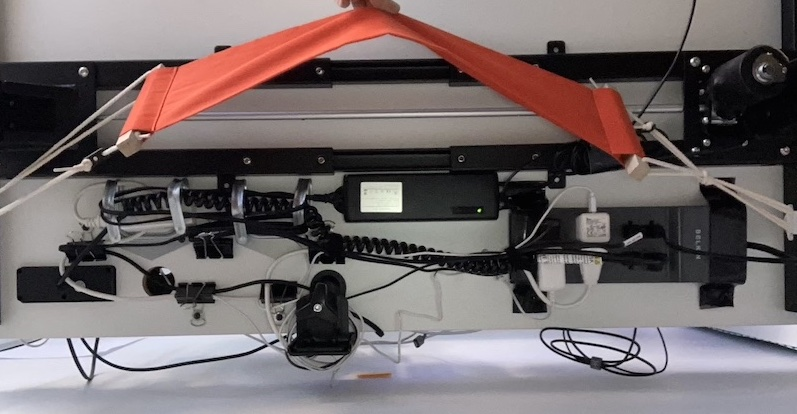
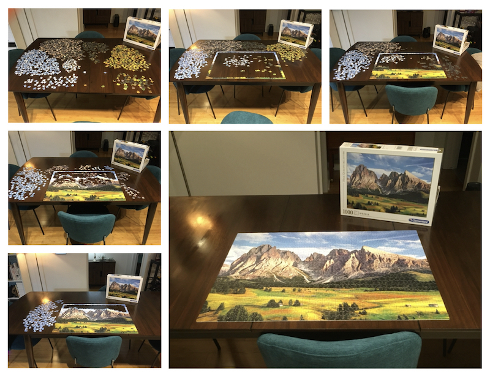

2020 Year In Review
I’m really excited that 2020 is over! This was the hardest year of my life so far. It was also the first one that was worse and not better than all the previous ones, which I’m really hoping is not a new trend. When I thought about it a bit I realized I still did a lot of cool things and learned a lot this year though.
They’re arranged roughly in order of least to most personal, so if you finish one section and thought “wow, that was a bit of an overshare, Kira”, then – fair warning – you might not want to continue.
Desk
One thing I’m really proud of that I did this year is finally get the cable situation behind my desk under control. I’ll take whatever wins I can get right now, so I’m counting this as a big one. Here’s what it looks like before and after:
I moved this year, which gave my the perfect opportunity because I had to take everything off my desk anyway. I knew I had to do it then or else wait until the next time everything was off my desk for some reason. I just used some duct tape, large binder clips with washers so the screws would hold, and these aluminium hooks I found at the dollar store. I made a harness for my power strip out of the duct tape and screwed it and the other things into the bottom of the desk. I borrowed a drill from my landlord and already had the tape, so it all cost me about $10. This is what it looks like underneath:

In this new apartment I had space for my bookshelf next to my desk, so that box on the bottom shelf in the “after” picture has my router and modem in it. It’s so much better to not be kicking cables all the time.
Puzzle
In the spirit of celebrating wins, no matter how small, I’m counting this as one, too: I finished a big puzzle! I needed to find a lot of new hobbies that don’t involve screens this year, so I bought a puzzle. It turns out it was pretty hard on my neck looking down for long periods, so I’m not sure if I’ll do any more, but I really liked having something to keep my hands busy while I thought about other stuff or talked on the phone.

Remote Community
One silver lining of the pandemic is that it has made it really easy to connect with new people I never would have met before. The communities I participate in only on my computer have become a really important part of my life. A couple are religious (or ex-religious) communities that I found through my spiritual pursuits. I’ve been able to find and connect with people with really interesting and eye-opening perspectives that I don’t think I would have ever met in real life.
I also signed up for a “virtual” co-working community a couple of months ago and it’s been a really great way to add some structure to my days, which otherwise all feel like a giant blur. It’s mostly a bunch of other self-employed people who already had this great community before the pandemic and moved it online once it became obvious there’s no end in sight. I’m looking forward to finding creative ways to keep in touch with all the cool new people I’ve met on the internet this year. It seems like it should be really compatible with my non-pandemic-time semi-nomadic lifestyle, so that’s exciting.
Work
Work is still going well for me. I’ve been very lucky to be able to continue working throughout the pandemic and I still love the team I work with. We have some of the usual issues software teams do, but overall the people I work with are genuinely kind and talented, which it seems is a lot to ask in the tech industry these days. They’re easy to get along with and approach work and life the same way I do – not too seriously and with priorities straight. There were a few days I was just too sad and broken to work and everyone was very supportive, understanding, and helpful. All employers say they care about their staff, but this is the first place I’ve worked where I think that’s actually true. I plan on continuing with this team for now, at least through next year.
I’ve been spending Friday afternoons mentoring at a local web development bootcamp, Lighthouse Labs, for a few years now, but this year I decided to stop. Because of the pandemic everything moved online, which partly contributed to my decision. They did a really good job building tools to facilitate virtual learning and mentoring, but in the end I found the online format really challenging and draining, so I decided I had to step away. I’d like to replace this work with something else over the course of next year. I’m not sure what yet, but I know I enjoy teaching new developers and have learned a lot about how to do that over the years.
Travel
I spent February and part of March in the French Antilles, which was a great choice. I rented a big house with a few friends; there were three of us for the whole month and a couple others who joined for less time. We had 6 people there at its busiest! I really love doing trips like this and can’t wait to do more once it’s safe to travel again.
The highlight for me was hiking to the top of Mount Pelée. It was really steep and way above my skill level, but I survived and it was a cool view from the top.

There were a lot of other highlights, mostly involving beaches. Overall the trip was amazing, except for one week when I got brutally sick with some sort of mystery disease. I took a covid antibody test in the summer which said it was “unlikely” I ever had it, so it was probably something else. A local nurse reckoned maybe just a nasty flu. I’ll never know for sure now, but anyway, I also survived that and the rest of the trip was perfect. Lounging around turquoise Caribbean beaches, noshing on French pastries all day, and hanging out with my friends makes for a pretty prefect winter getaway for me.
Obviously the rest of my plans for the year were dashed, and now I’m just waiting out the pandemic like everyone else. I’m planning on doing some more local trips next year, assuming the pandemic abates enough to allow it.
Moving
I moved again this summer. I move a lot. It was a bit stressful moving during the pandemic, but in the end I got all my stuff here and I really love my new apartment. I gave up my old lease in January before everything got crazy, and honestly I don’t know if I would have chosen to move if I knew what was coming, but I’m really happy I did.
I also got rid of my car this year so now I walk everywhere or sometimes use Communauto, the car-sharing service here. One of the best things about my new apartment is the location. Everything I need is only a couple minutes walk away. I really love city living. I daydream all the time about moving back to the East Coast, where I’m from. It’s so idyllic and peaceful there, but I really don’t like needing to drive literally everywhere. But we’ll see. Probably someday. Right now I’m pretty excited to be in Montreal for the post-pandemic years. It was already a really fun city with so many cool things to do before the pandemic, and after this whole mess settles I think it’ll only be better. There are millions of cool people with two years or more of pent up creativity and missed celebrations to work through. I’m kind of excited to stick around for it.
Goals
At the beginning of the year I made a few goals for myself. It’s the first time I did that but it worked out well, so I think I’ll do it again. These were my goals for 2020:
- Stop using Google: I did this. I’ll probably write a separate post about the tools I’m using now, but in the end it really wasn’t as big of a deal as I thought it would be. There are a lot of great services out there that are pretty much a drop in replacement.
- Start blogging: I did this, too! I’m not really sure yet what the point is, but I’ve always enjoyed writing and sharing my thoughts, so I decided to just start blogging instead of continuing to ruminate over what to even blog about because I realized I probably would never answer that question. I thought I would write mostly about technical stuff, but it turns out most of the topics that are interesting to me aren’t really technical ones. My most popular post was a technical guide, though, so maybe that’s a hint I should continue down that road.
- Learn about effective altruism: I heard about this charity entrepreneurship program late last year and very nearly applied to do it for the summer of 2020. Turns out it would have been postponed anyway, but I’ve rushed into enough stuff that hasn’t worked out in the past that I stopped myself and decided to look into it a bit and decide if I might want to apply for 2021 after learning some more. I also feel like I’m past the age where I can just throw away everything I know and keep starting over. The urge is still strong, but this current iteration of my life is going pretty well so far, and uprooting it all would be a bigger deal than it was when I was 20.
Anyway, I did Peter Singer’s effective altruism course online as well as a course about evaluating social programs from edX. I learned a lot of really interesting things, but in the end I decided leaving my career in software to pursue charity entrepreneurship isn’t the right move for me in 2021. I am thinking about different entrepreneurial projects that would increase my impact that I could merge with my existing career, though. I also did become convinced that I should be donating way more of my big tech paycheques than I was previously. I gave away $8,150 this year and my lifestyle didn’t suffer at all. I know this has been a really hard year for a lot of people and I’m not trying to be flippant about that amount of money, but I also know a lot of people who make a lot of money and think they’re still not rich enough to be philanthropic, which isn’t true. If I can convince some of those people to be more charitable I can have a bigger impact than I can just giving away my own money, so that’s why I talk about it.
Spirituality
I got a spiritual director last year, but this year I started doing the Ignatian spiritual exercises with her. I really like having some structure to guide my spiritual journey. Without a schedule to stick to it’s really easy for me to go days or longer without really checking in with myself or the divine. I like having a regular meditation/reflection/prayer time as a part of my routine. I’m increasingly finding it helps keep me focused and motivated, which was a literal lifeline this year.
This has become the biggest part of my spiritual life now, but I have still been in touch with several religious communities through the pandemic. I’ve met a lot of really amazing people with a kind of faith that I find very reasonable, but I still find myself less and less keen to participate in religious organizations the more I experiment with them. I know any organization led by people will have problems, but man the problems in the church are really in a class of their own. I feel like I can’t officially join the Christian tribe in good conscience until there’s a general movement toward repentance and reconciliation, and I’m not really interested in getting involved as a reformer, which I feel pretty strongly is the only role I could have in a church and not feel like I was betraying my ethics.
Anyway, I’m continuing with the spiritual exercises in my pursuit of transcendence, and I’m keeping an open mind about the possibility of religious community thanks to some very loving and open minded believers I’ve met online this year.
Relationships
In September I got out of a longish, long distance relationship I was trying to make work, and now I’m single for the first time since I was 15. So, basically the first time in my life. This was a really shitty year to have to learn how to be single, but I’m happy with my progress so far. I’m discovering all kinds of things about myself that were either really easy to ignore or just covered up by the fact that I’ve always shared my life with someone else. I’m really grateful for the relationships I’ve had, but being alone is a useful experience, too.
Overview
Overall this year was very hard and dark for me, but I made it! And there were still lots of things that went well.
- I’m grateful for my health and that I and everyone I know made it through the year, though I wasn’t always sure that would be the case
- I’m lucky to have a great job that I love most of the time and lucky to have great coworkers
- I achieved my goals and feel motivated to pick one or two things to slowly chip away at over next year
- I’ve found a lot of value in seeking the transcendent, but religion is still very hard for me. The ultimate catch 22. It’s simultaneously the richest source of transcendental wisdom and the most unappealing format imaginable to present it in.
I’m hoping next year is better than this one. Stay safe and Happy New Year everyone.